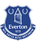

Статистика матча
Нет данных
Эвертон выиграл 3 из 4 последних встреч во всех турнирах: 3:2 в гостях в феврале 2026 года, но дома в ноябре 2025-го уступил 1:4.
Грилиш, Брэнтуэйт — травмы; под вопросом Миколенко
Ливраменто, Жауэн — травмы
В 9 из 10 последних матчей Эвертона было меньше трёх голов. Уже 2 ноября команды снова сыграют — в АПЛ.
Форма — последние матчи, самый свежий справа. В — победа, Н — ничья, П — поражение.
Разбор матча
В 9 из 10 последних матчей Эвертона было меньше трёх голов, а у хозяев нет Грилиша и Брэнтуэйта.
Через три дня команды снова встретятся в АПЛ, поэтому ротация с обеих сторон очень вероятна. Кубковая осторожность и слабая атака Эвертона говорят против голевой перестрелки. Наша оценка «меньше 3.5» — около 73%.
Прогноз на матч Эвертон — Ньюкасл: форма команд
Эвертон в Кубке лиги прошёл Престон (4:0) и Вулверхэмптон (1:0), но в Премьер-лиге команда не выигрывает три тура подряд: 2:2 с Халлом, затем 0:2 от Челси и 0:2 от Арсенала. При этом в 8 из 10 последних матчей во всех турнирах «ирисок» не обыгрывали, а главное — в 9 из 10 последних игр Эвертона было забито меньше трёх мячей.
Ньюкасл в Кубке лиги обыграл Вест Бромвич (3:2) и Миллуолл (1:0). В чемпионате «сороки» нестабильны: крупное поражение 1:4 от Ковентри и выездная победа 2:0 над Кристал Пэлас в последнем туре. Команда не проигрывает в 7 из 10 последних матчей и забивает почти в каждой выездной игре.
Составы и потери
У Эвертона не сыграют Джек Грилиш и Джаррад Брэнтуэйт, под вопросом Виталий Миколенко. Отсутствие Грилиша лишает хозяев главного креативного игрока, что дополнительно снижает их атакующий потенциал. У Ньюкасла травмированы Тино Ливраменто и Эвен Жауэн, также под вопросом Льюис Майли.
Очные встречи
Эвертон выиграл три из четырёх последних встреч во всех турнирах. В феврале 2026 года «ириски» победили на выезде 3:2, а в ноябре 2025-го дома уступили 1:4. В Премьер-лиге Ньюкасл не проигрывал в шести из восьми последних визитов на поле Эвертона. Важная деталь: 2 ноября эти команды снова встретятся, уже в чемпионате на поле Ньюкасла.
Мотивация и тактика
Кубок лиги — реальный шанс на трофей для обоих клубов, но через три дня их ждёт очная встреча в АПЛ, поэтому ротация с обеих сторон очень вероятна. Обновлённые составы и осторожность в матче, где ошибка ведёт к вылету, обычно не способствуют голевой перестрелке. Эвертон играет от обороны, а без Грилиша у него мало способов вскрывать плотную защиту. Судит Фараи Халлам — арбитр без красных карточек в 13 последних матчах.
Варианты ставок: кто победит
Средние коэффициенты на исход: Эвертон — 2.20, ничья — 3.55, Ньюкасл — 3.20. Тотал больше 2.5 стоит 1.75, меньше 3.5 — 1.42 (Winline). Мы оцениваем шанс, что в основное время будет забито не больше трёх мячей, примерно в 73%.
- Основная ставка: тотал меньше 3.5 за 1.42
- Альтернатива: Ньюкасл не проиграет (X2) — 1.61–1.70
- Обе забьют — да — 1.63
Почему тотал меньше 3.5
Коэффициент 1.42 соответствует вероятности около 68% с учётом маржи, наша оценка — около 73%. Ставка сыграет при любом счёте с тремя мячами и меньше, включая 2:1 и 1:1 — самые частые результаты в матчах такого уровня. Против работает только сценарий с ранним голом и открытой игрой, как в ноябре 2025 года, когда Ньюкасл выиграл на этом поле 4:1. Но с тех пор Эвертон играет заметно осторожнее, а без Грилиша и Брэнтуэйта хозяева, скорее всего, сделают ставку на компактную оборону и контратаки. Если же матч дойдёт до дополнительного времени, ставка на тотал рассчитывается по итогам основных 90 минут.
Итог
Наш прогноз на матч Эвертон — Ньюкасл — тотал меньше 3.5. Эвертон играет низовые матчи, без Грилиша у хозяев меньше созидания, а близкая очная встреча в АПЛ делает ротацию почти неизбежной. Кто победит — вопрос открытый, а вот перестрелка маловероятна.
Вопросы о матче
Кто победит в матче Эвертон — Ньюкасл?
Шансы близки: на Эвертон дают около 2.20, на Ньюкасл — около 3.20. Мы ставим не на исход, а на тотал меньше 3.5.
Сколько голов будет в матче Эвертон — Ньюкасл?
Мы ждём не больше трёх мячей: в 9 из 10 последних матчей Эвертона было меньше трёх голов. Ставка — тотал меньше 3.5 за 1.42.
Сыграет ли Грилиш против Ньюкасла?
Нет, Джек Грилиш травмирован, также не сыграет Джаррад Брэнтуэйт.
Когда начало матча Эвертон — Ньюкасл?
Матч 1/8 финала Кубка лиги пройдёт 29 октября на «Хилл Дикинсон Стэдиум», начало в 22:45 по Москве.
Прогноз — оценка вероятности исхода, а не гарантия результата.